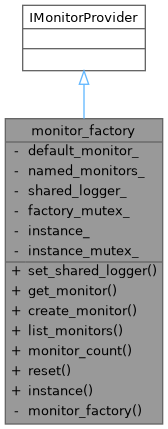
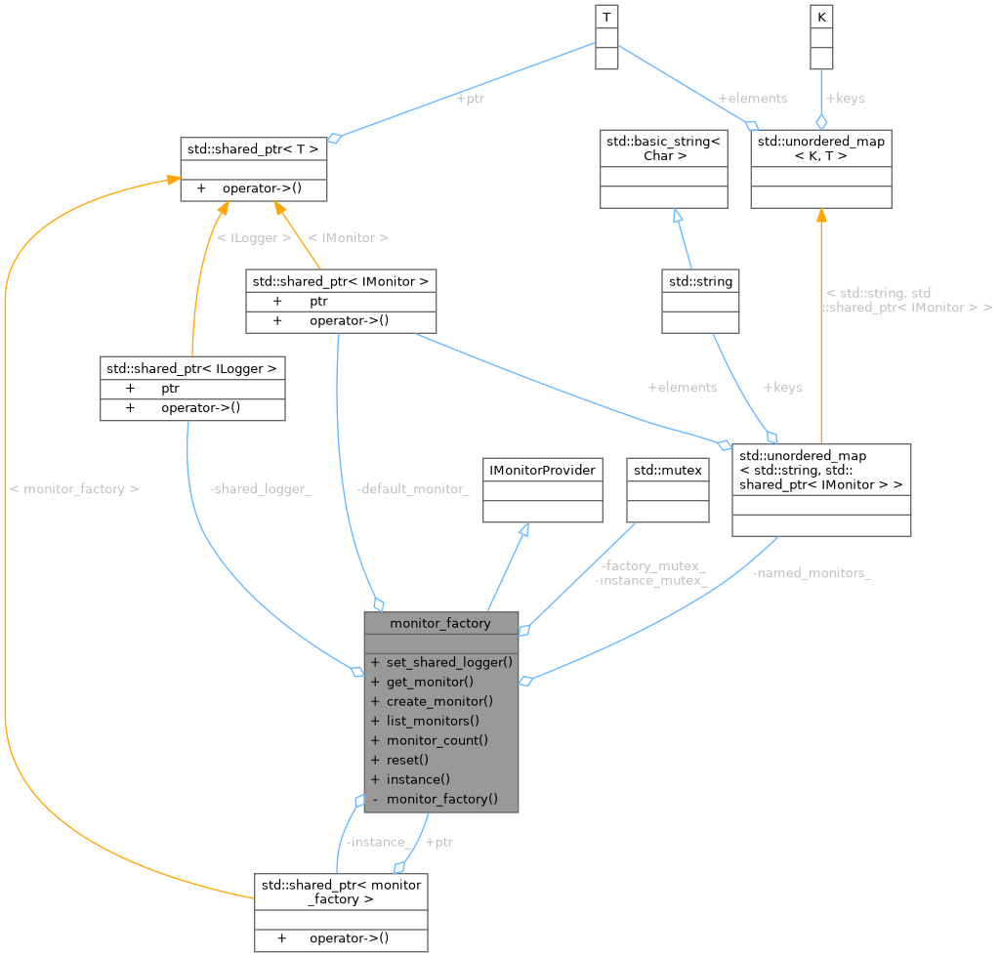
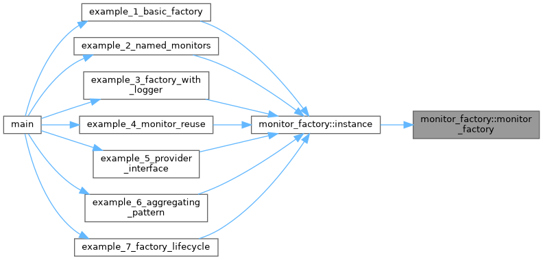
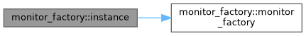
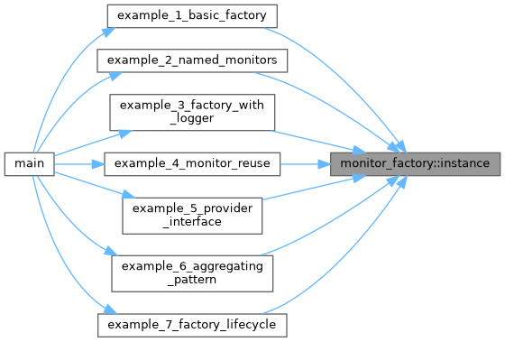

- Generated by
 1.12.0
1.12.0
|
Monitoring System 0.1.0
System resource monitoring with pluggable collectors and alerting
|
Monitor factory implementing singleton pattern with DI. More...


Public Member Functions | |
| void | set_shared_logger (std::shared_ptr< ILogger > logger) |
| std::shared_ptr< IMonitor > | get_monitor () override |
| std::shared_ptr< IMonitor > | create_monitor (const std::string &name) override |
| std::vector< std::string > | list_monitors () const |
| size_t | monitor_count () const |
| void | reset () |
Static Public Member Functions | |
| static std::shared_ptr< monitor_factory > | instance () |
Private Member Functions | |
| monitor_factory ()=default | |
Private Attributes | |
| std::shared_ptr< IMonitor > | default_monitor_ |
| std::unordered_map< std::string, std::shared_ptr< IMonitor > > | named_monitors_ |
| std::shared_ptr< ILogger > | shared_logger_ |
| std::mutex | factory_mutex_ |
Static Private Attributes | |
| static std::shared_ptr< monitor_factory > | instance_ = nullptr |
| static std::mutex | instance_mutex_ |
Monitor factory implementing singleton pattern with DI.
Definition at line 30 of file monitor_factory_pattern_example.cpp.
|
privatedefault |
Referenced by instance().

|
inlineoverride |
Definition at line 70 of file monitor_factory_pattern_example.cpp.
References factory_mutex_, and named_monitors_.
|
inlineoverride |
Definition at line 60 of file monitor_factory_pattern_example.cpp.
References default_monitor_, and factory_mutex_.
|
inlinestatic |
Definition at line 43 of file monitor_factory_pattern_example.cpp.
References instance_, instance_mutex_, and monitor_factory().
Referenced by example_1_basic_factory(), example_2_named_monitors(), example_3_factory_with_logger(), example_4_monitor_reuse(), example_5_provider_interface(), example_6_aggregating_pattern(), and example_7_factory_lifecycle().


|
inline |
Definition at line 83 of file monitor_factory_pattern_example.cpp.
References factory_mutex_, and named_monitors_.
|
inline |
Definition at line 95 of file monitor_factory_pattern_example.cpp.
References default_monitor_, factory_mutex_, and named_monitors_.
|
inline |
Definition at line 100 of file monitor_factory_pattern_example.cpp.
References default_monitor_, factory_mutex_, and named_monitors_.
|
inline |
Definition at line 51 of file monitor_factory_pattern_example.cpp.
References factory_mutex_, and shared_logger_.
|
private |
Definition at line 35 of file monitor_factory_pattern_example.cpp.
Referenced by get_monitor(), monitor_count(), and reset().
|
mutableprivate |
Definition at line 38 of file monitor_factory_pattern_example.cpp.
Referenced by create_monitor(), get_monitor(), list_monitors(), monitor_count(), reset(), and set_shared_logger().
|
staticprivate |
Definition at line 32 of file monitor_factory_pattern_example.cpp.
Referenced by instance().
|
staticprivate |
Definition at line 33 of file monitor_factory_pattern_example.cpp.
Referenced by instance().
|
private |
Definition at line 36 of file monitor_factory_pattern_example.cpp.
Referenced by create_monitor(), list_monitors(), monitor_count(), and reset().
|
private |
Definition at line 37 of file monitor_factory_pattern_example.cpp.
Referenced by set_shared_logger().